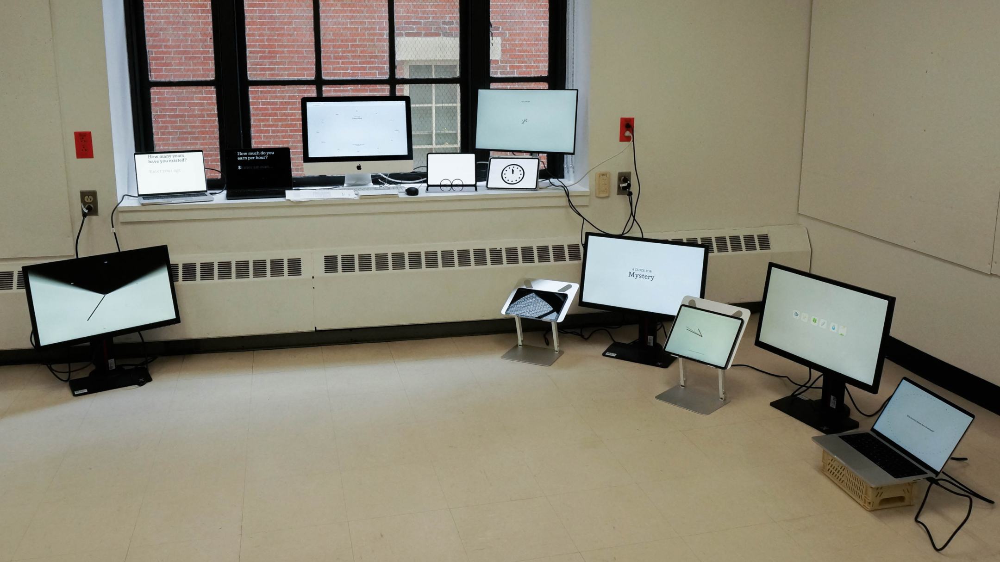
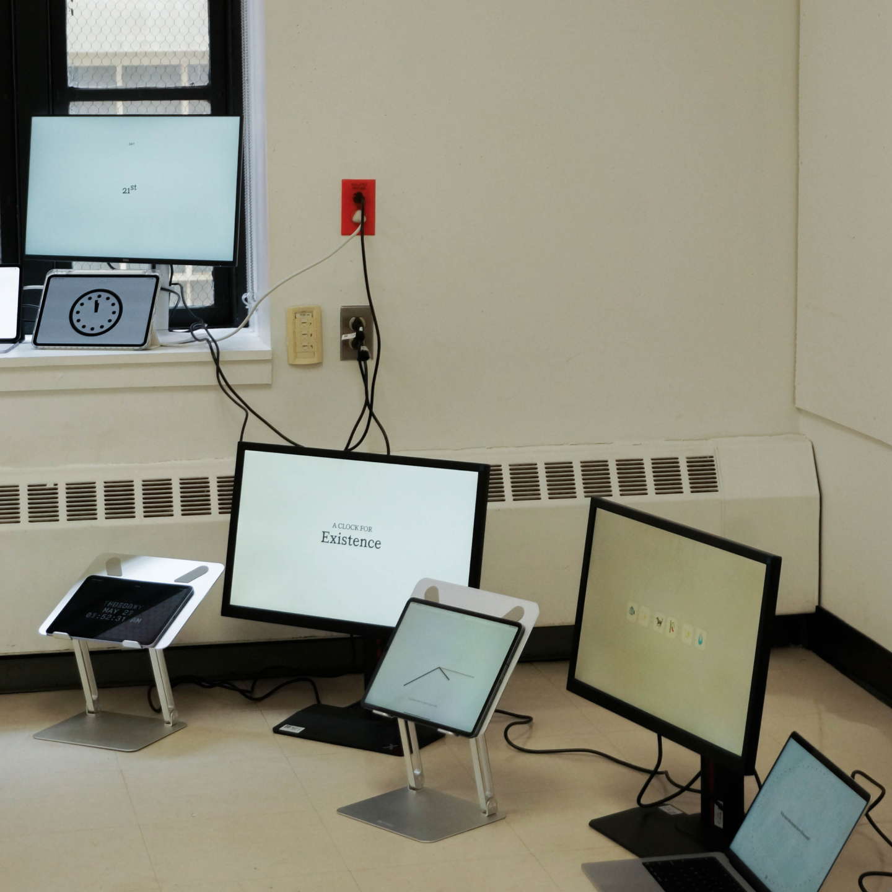
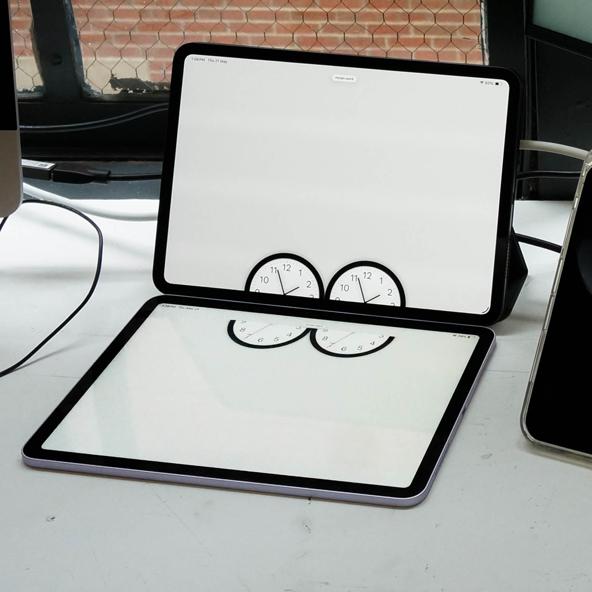
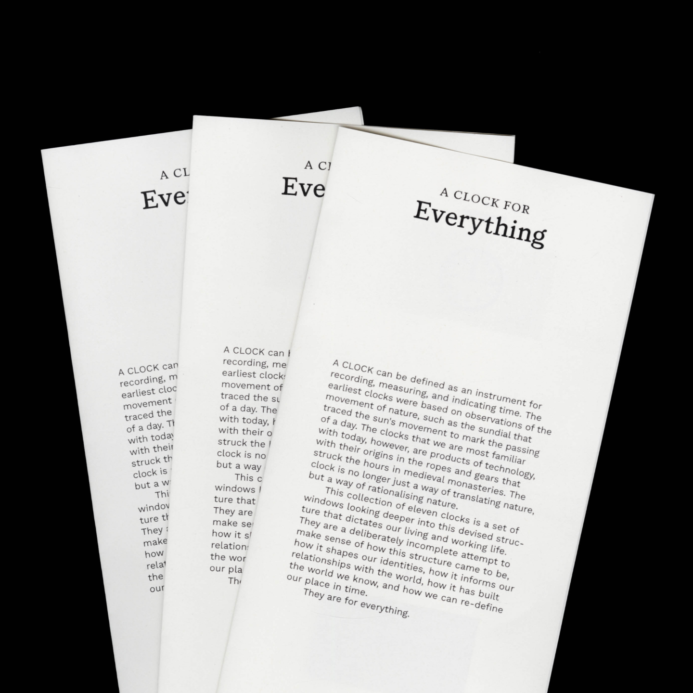
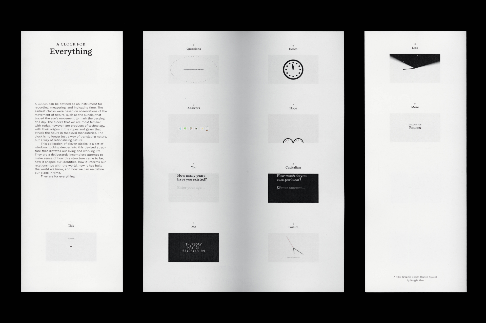
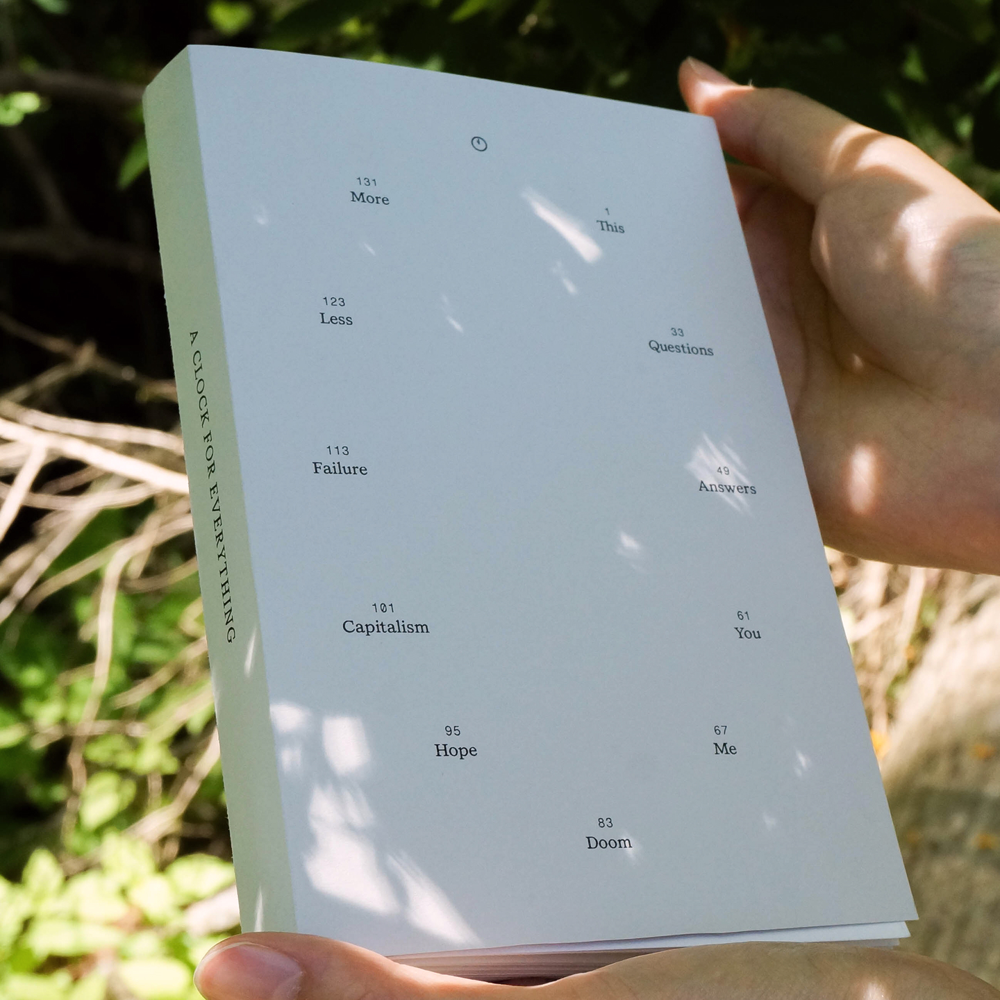
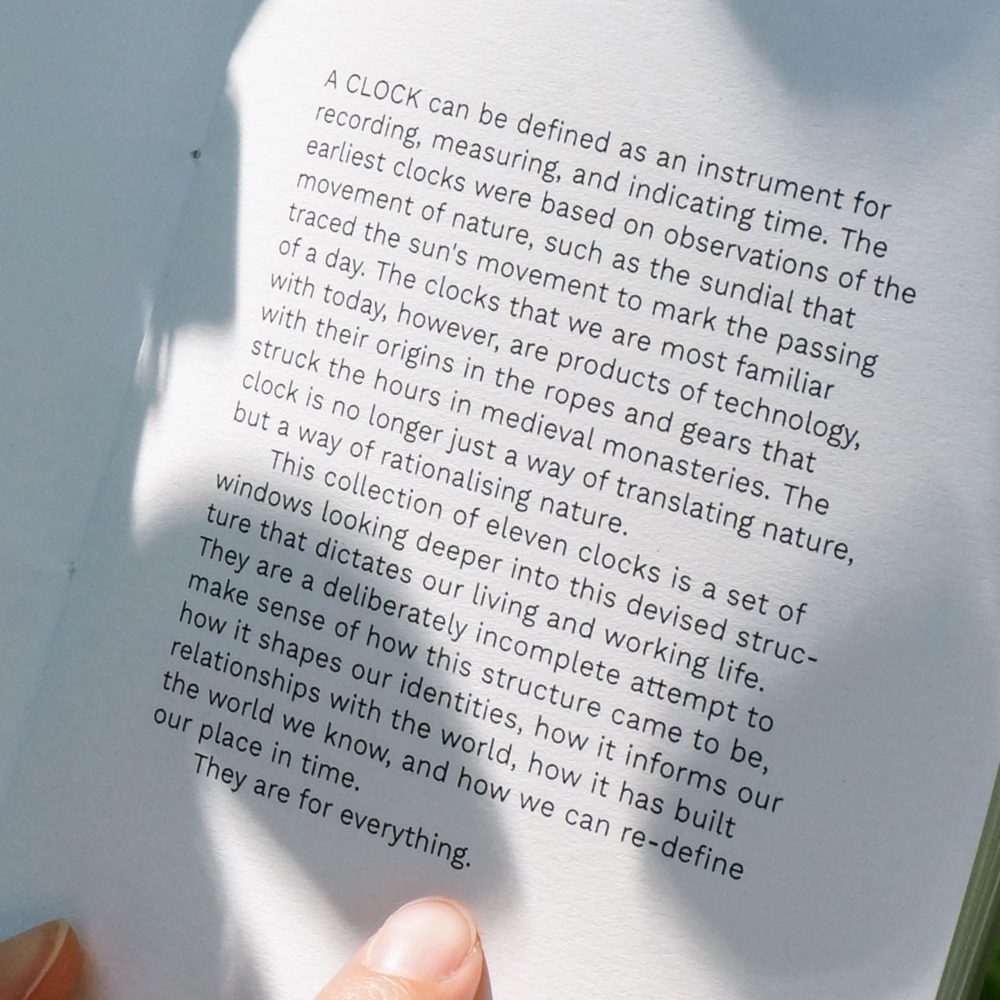
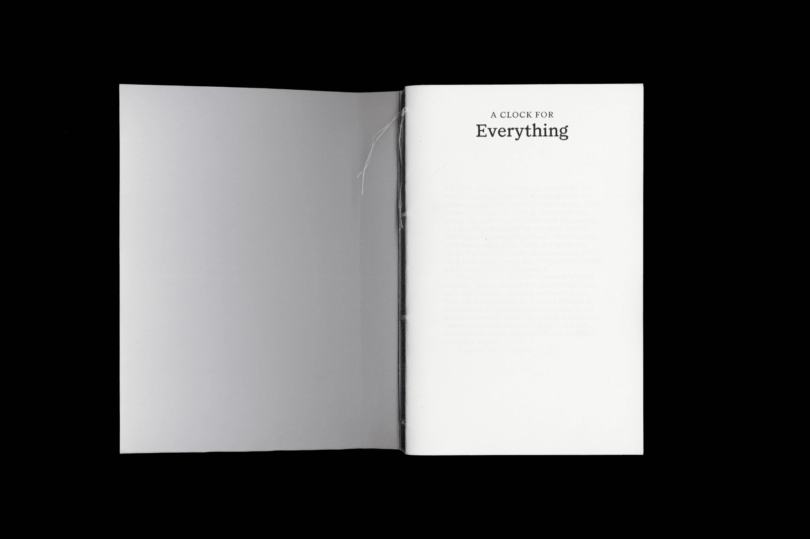
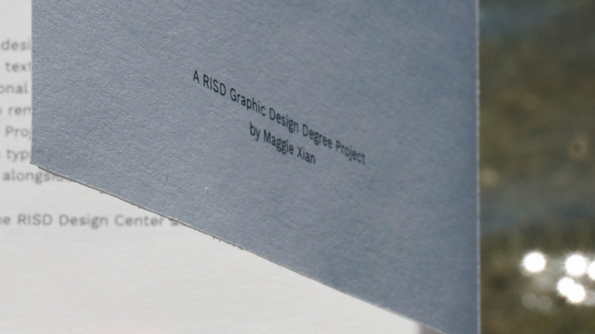

A CLOCK FOR EVERYTHING
Research, Code, Editorial
Spring 2026
Advised by Anther Kiley for Degree Project @ RISD. Special thanks to Mia Kei Cheng for help with documentation, and everyone else that made this project possible.
A Clock for Everything is a degree project made in fulfillment of Rhode Island School of Design’s BFA in Graphic Design.
Indexed via a central website, a collection of hand coded mini-sites attempt to critique — as honestly as possible — time, technology, and making. Through one introductory site and five pairing sites, it explores how the structure of the clock came to be, how it shapes our identities, how it informs our relationships with the world, how it has built the world we know, and how we might re-define our place in time.
For additional context, an accompanying reader publishes a selection of research pertinent to each site. The reader is softcover Swiss bound by hand, and the full PDF is linked on the index site. Everything is typeset in Voyager by me (with a custom 🕚 glyph), alongside Work Sans and Fragment Mono by Wei Huang.
With eleven interpretations of the clock, the collection is left deliberately incomplete — because time never truly stops…








